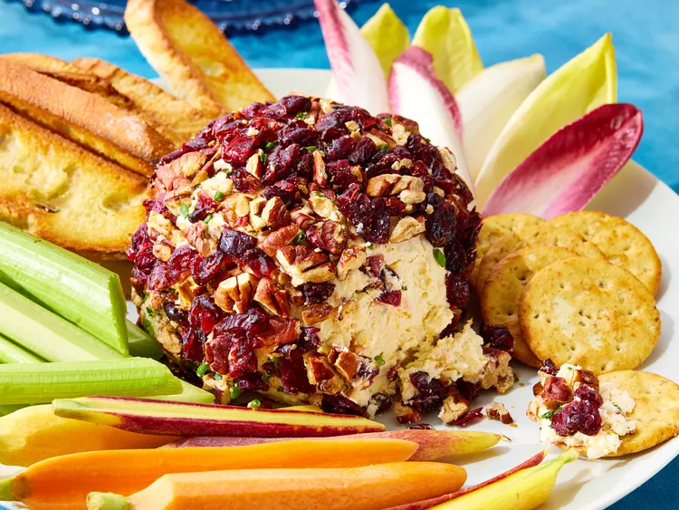
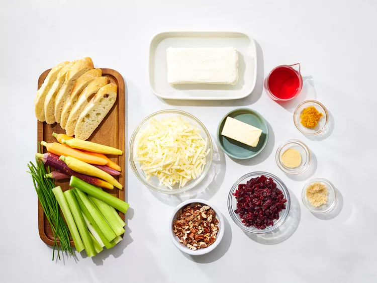
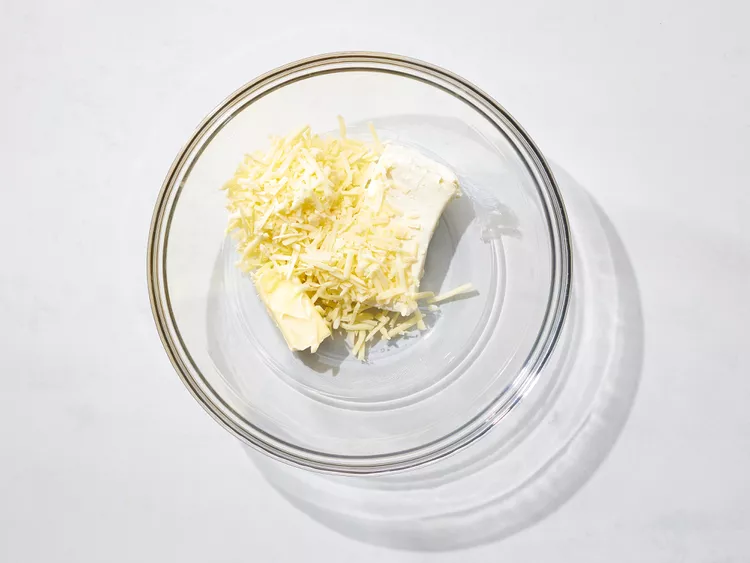
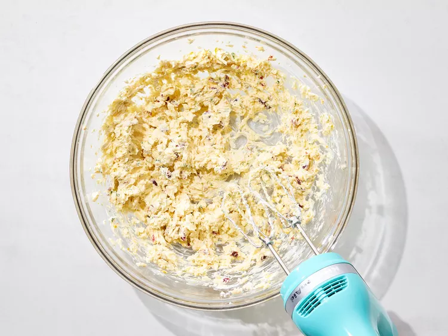
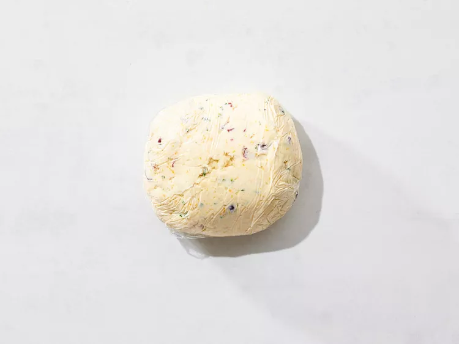
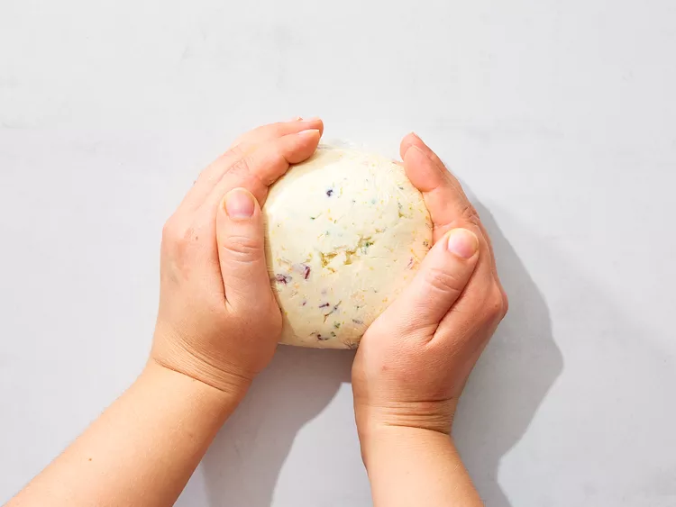
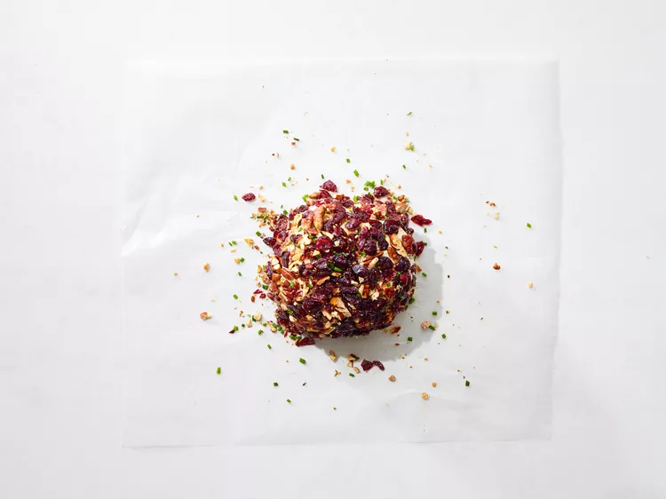
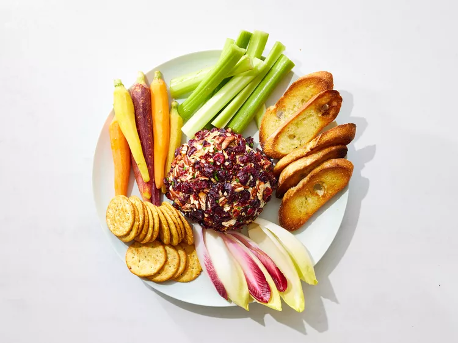

Home
Cranberry Cheese Ball

Description
This cranberry cheese ball with orange zest, sharp white Cheddar cheese, and garlic is simply delicious. The red and green color combination from cranberries and chives make it look extra festive and it's the perfect holiday appetizer.
Ingredients
- 1/4 cup cranberry juice cocktail
- 1/2 cup dried cranberries, snipped, divided
- 1 (8-ounce) package cream cheese
- 1 cup shredded sharp white Cheddar cheese
- 1/4 cup butter
- 2 tablespoons snipped fresh chives, divided
- 1/2 teaspoon orange zest
- 1/2 teaspoon packed brown sugar
- 1/2 teaspoon garlic powder
- 1/4 cup pecans, toasted and finely chopped
- crackers, crostini, and/or vegetable dippers for serving
Steps
- Gather all ingredients.

- Bring cranberry juice just to a boil in a small saucepan. Remove from heat. Add 1/4 cup dried cranberries. Cover; set aside.

- Place cream cheese, Cheddar cheese, and butter in a large bowl. Let stand at room temperature for 30 minutes.

- Drain cranberries, reserving 1 tablespoon juice. Add plumped cranberries and reserved juice to the bowl with the cheese mixture. Add 1 tablespoon chives, orange zest, brown sugar, and garlic powder. Beat with an electric mixer on medium until light and fluffy.

- Place cheese mixture on a sheet of plastic wrap. Use the plastic wrap to shape the mixture into a ball (it won’t be a perfect shape at this point). Wrap in the plastic wrap and chill in the refrigerator for 3 to 24 hours.

- Now you can make a better ball shape by rolling the wrapped mixture on your work surface.

- Sprinkle remaining 1/4 cup dried cranberries, remaining 1 tablespoon chives, and the pecans on a sheet of plastic wrap or waxed paper. Roll cheese ball in the mixture to coat.

- Let stand 15 minutes before serving with crackers, crostini, or vegetable dippers.
